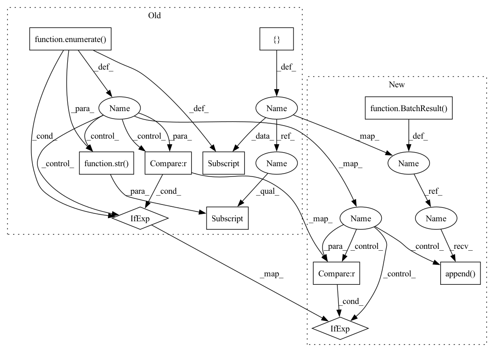

Pattern ID :11328

Before Change
:return: Dictionary, where the keys are image indices within
a batch and the values are the mean score per detection
mean_scores_per_image = {}
for score_idx, score in enumerate(scores):
_check_valid_score(score)
mean_scores_per_image[str(score_idx)] = (
0.0 if score == [None] else numpy.mean(score)
)
return mean_scores_per_image
After Change
:return: BatchResult object, that contains the mean scores
per detection in the batch
batch_result = BatchResult()
for score in scores:
_check_valid_score(score)
batch_result.append(0.0 if score == [None] else numpy.mean(score))
return batch_result
In pattern: SUPERPATTERN
Frequency: 3
Non-data size: 11
Instances
Fragment ID: 38482072
Project Name: neuralmagic/deepsparse
Commit Name: 9b6170723c84e3c97088a67c73b0a2ad7ac9ad12
Time: 2023-01-24
Author: 97082108+dbogunowicz@users.noreply.github.com
File Name: src/deepsparse/loggers/metric_functions/computer_vision/built_ins.py
M Class Name: AnonimousClass
N Class Name: AnonimousClass
M Method Name: mean_score_per_detection(1)
N Method Name: mean_score_per_detection(1)
M Parent Class:
N Parent Class:
M File Name: src/deepsparse/loggers/metric_functions/computer_vision/built_ins.py
N File Name: src/deepsparse/loggers/metric_functions/computer_vision/built_ins.py
M Start Line: 197
M End Line: 202
N Start Line: 189
N End Line: 192
'>
Before Change
}
number_objects_per_image = {}
for detection_idx, detection in enumerate(detected_classes):
_check_valid_detection(detection)
number_objects_per_image[str(detection_idx)] = (
0 if detection == [None] else len(detection)
)
return number_objects_per_image
After Change
detections per sample in the batch
batch_result = BatchResult()
for detection in detected_classes:
_check_valid_detection(detection)
batch_result.append(0 if detection == [None] else len(detection))
return batch_result
def mean_score_per_detection(scores: List[List[Union[None, float]]]) -> BatchResult:
'>
Fragment ID: 38482067
Project Name: neuralmagic/deepsparse
Commit Name: 9b6170723c84e3c97088a67c73b0a2ad7ac9ad12
Time: 2023-01-24
Author: 97082108+dbogunowicz@users.noreply.github.com
File Name: src/deepsparse/loggers/metric_functions/computer_vision/built_ins.py
M Class Name: AnonimousClass
N Class Name: AnonimousClass
M Method Name: number_detected_objects(1)
N Method Name: number_detected_objects(1)
M Parent Class:
N Parent Class:
M File Name: src/deepsparse/loggers/metric_functions/computer_vision/built_ins.py
N File Name: src/deepsparse/loggers/metric_functions/computer_vision/built_ins.py
M Start Line: 172
M End Line: 177
N Start Line: 168
N End Line: 171
'>
Before Change
:return: Dictionary, where the keys are image indices within
a batch and the values are the standard deviation of scores per detection
std_scores_per_image = {}
for score_idx, score in enumerate(scores):
_check_valid_score(score)
std_scores_per_image[str(score_idx)] = (
0.0 if score == [None] else numpy.std(score)
)
return std_scores_per_image
After Change
:return: BatchResult object, that contains the standard
deviation of scores per detection in the batch
batch_result = BatchResult()
for score in scores:
_check_valid_score(score)
batch_result.append(0.0 if score == [None] else numpy.std(score))
return batch_result
'>
Fragment ID: 38482070
Project Name: neuralmagic/deepsparse
Commit Name: 9b6170723c84e3c97088a67c73b0a2ad7ac9ad12
Time: 2023-01-24
Author: 97082108+dbogunowicz@users.noreply.github.com
File Name: src/deepsparse/loggers/metric_functions/computer_vision/built_ins.py
M Class Name: AnonimousClass
N Class Name: AnonimousClass
M Method Name: std_score_per_detection(1)
N Method Name: std_score_per_detection(1)
M Parent Class:
N Parent Class:
M File Name: src/deepsparse/loggers/metric_functions/computer_vision/built_ins.py
N File Name: src/deepsparse/loggers/metric_functions/computer_vision/built_ins.py
M Start Line: 221
M End Line: 226
N Start Line: 211
N End Line: 214